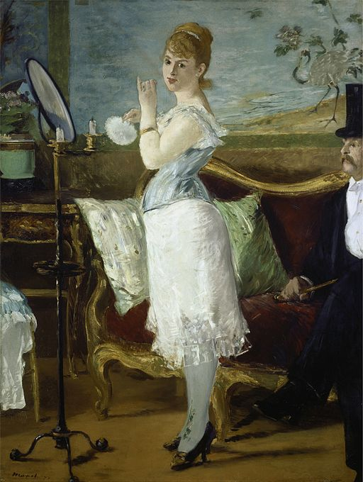

<head>
<meta charset="UTF-8" />
<meta name="keywords" content="drawing, painting" />
<meta name="description" content="drawings by Sunjy" />
<title>Sunjy</title>
<link rel="shortcut icon" type="image/x-icon" href="../../mImages/mCommon/favicon.ico" media="screen" />
<link rel="stylesheet" type="text/css" href="../../mCsses/mCommon/mCssA.css" />
<link rel="stylesheet" type="text/css" href="../../mCsses/mCommon/mCssB.css" />
<link rel="stylesheet" type="text/css" href="../../mCsses/mCommon/mCssC.css" />
<link rel="stylesheet" type="text/css" href="../../mCsses/mCommon/mCssD.css" />
<link rel="stylesheet" type="text/css" href="../../mCsses/mContent/mCssA.css" />
<link rel="stylesheet" type="text/css" href="../../mCsses/mContent/mCssB.css" />
<link rel="stylesheet" type="text/css" href="../../mCsses/mContent/mCssC.css" />
<link rel="stylesheet" type="text/css" href="../../mCsses/mContent/mCssD.css" />
</head>
<script type="text/javascript" src="../../mScripts/mContent/mContentAA.js" /></script>
<script type="text/javascript" src="../../mScripts/mContent/mContentAB.js" /></script>
<script type="text/javascript" src="../../mScripts/mContent/mContentAC.js" /></script>
<script type="text/javascript" src="../../mScripts/mContent/mContentAD.js" /></script>
<script type="text/javascript"></script> 
<script type="text/javascript">
document.write('<div class="mImgAbsolute"></div>');
/*
document.write('<p class="mFontSizeBColor" />From a white paper...</p>');
document.write('<table class="center"><tr><td>');
document.write('');
document.write('</td></tr></table>');
*/
</script>


<script type="text/javascript">
document.write('<p class="mFontSizeBColor" />Nana</p>');
document.write('<p class="mFontSizeSColor" />By Edouard Manet, 1881. Nana shows a young woman who stands before a mirror with two extinguished candles; her face turned to the viewer. Her dress is incomplete.<br><br>She is wearing a white chemise, blue corset, silk stockings, and high-heeled shoes. The interior suggests that it is a boudoir. Behind the woman is a sofa with two pillows.<br><br>An elegantly dressed man, sitting on the couch, can be partly seen on the right of the painting.<br><br>The title and the many details suggest that the picture represents a high-class prostitute and her client. “Nana” was a popular assumed name for female prostitutes during the second half of the 19th century.<br><br>Painted in 1877 it was refused at the Salon of Paris because it was deemed to be contemptuous of the morality of the time.<br><br>French society was not prepared for such frank depictions of prostitution, and the critics did not see the artistic qualities of the work as they focused on the subject of the painting.<br><br>One of the defenders of Manet was Émile Zola who in 1880 published a novel of the same name as the ninth volume of Les Rougon-Macquart series.<br><br>It is also likely that Manet found inspiration in L’Assommoir by Zola in which the character of Nana.</p>');
document.write('<table class="center" /><tr><td>');
document.write('<br>She is wearing a white chemise, blue corset, silk stockings, and high-heeled shoes. The interior suggests that it is a boudoir. Behind the woman is a sofa with two pillows.<br><br>An elegantly dressed man, sitting on the couch, can be partly seen on the right of the painting.<br><br>The title and the many details suggest that the picture represents a high-class prostitute and her client. “Nana” was a popular assumed name for female prostitutes during the second half of the 19th century.<br><br>Painted in 1877 it was refused at the Salon of Paris because it was deemed to be contemptuous of the morality of the time.<br><br>French society was not prepared for such frank depictions of prostitution, and the critics did not see the artistic qualities of the work as they focused on the subject of the painting.<br><br>One of the defenders of Manet was Émile Zola who in 1880 published a novel of the same name as the ninth volume of Les Rougon-Macquart series.<br><br>It is also likely that Manet found inspiration in L’Assommoir by Zola in which the character of Nana." />');
document.write('</td></tr></table>');
</script>


